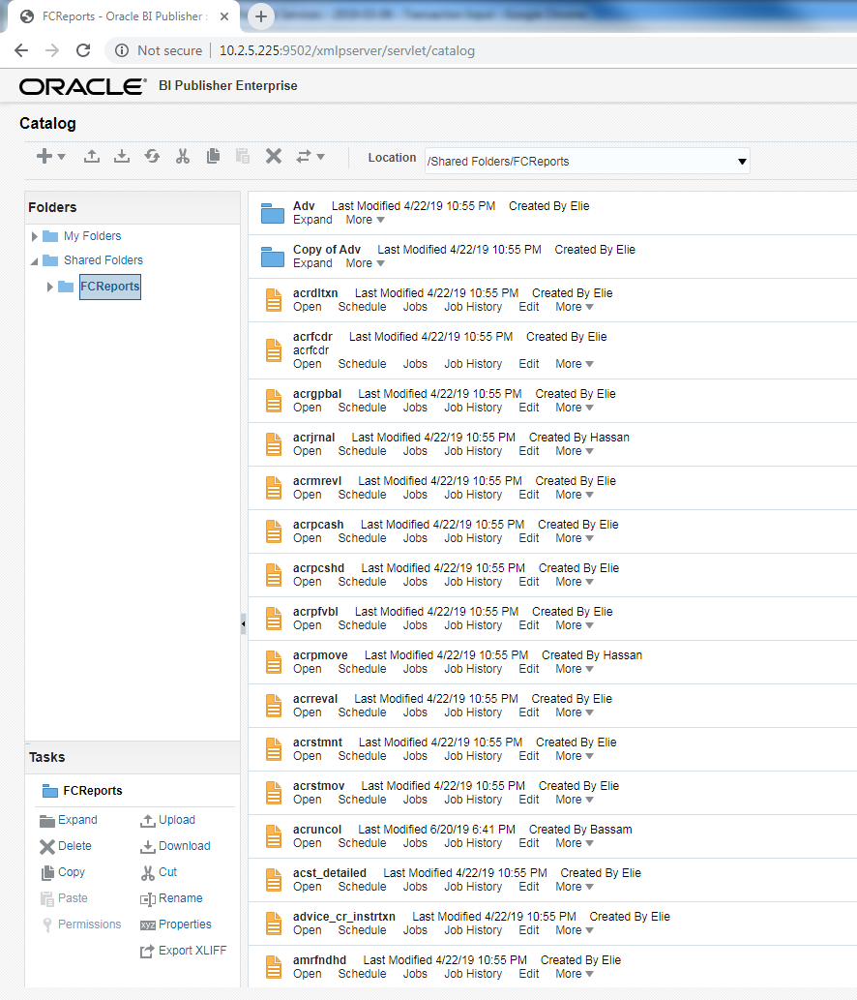
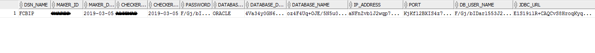

Canned Reports

Canned reports are pre-configured reports shipped with oracle FLEXCUBE media. They can be lunched from UBS Menu itself without the need to use BI Publisher.
To configure canned reports, follow the below steps:
BI Publisher: JDBC Maintenances
Open BI Publisher and create new JDBC Data source. All Canned Reports will be linked to this JDBC connection:
Test the connection and click on Save.
FCReports: upload canned reports

Using BI Publisher, under "Shared Folders" create new folder "FCReports"
Select FCReports folder and upload canned reports file
Configure DSN
Lunch FLEXCUBE universal Installed and select "Reports DNS Entries" then clic on Next
Configure DSN
Fill the database server information, test the connection, and then click on Next
Configure DSN

As shown in this picture, enter the FCBIP information, and then click on Next
STTM_HOST_DSN

DBA should verify the content of STTM_HOST_DSN table
FCUBS Property file
fcubs_properties should include the following information. Maintained while creating the EAR file.
Reporting Parameters Maintenance
Finally, lunch the screen RPDRPRAM and maintain it for all branches.